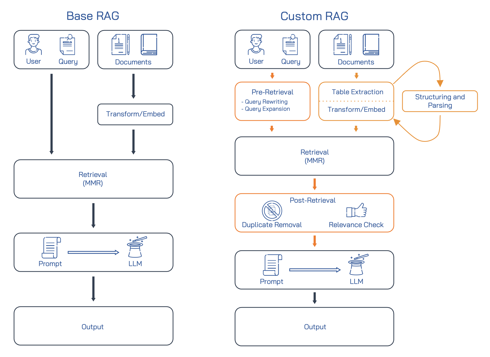
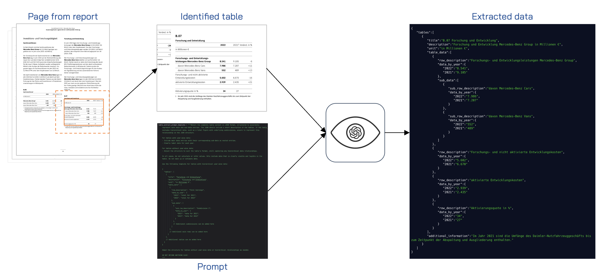

RAG Pipeline
Introduction to Retrieval Augmented Generation (RAG)
Retrieval-Augmented Generation (RAG) represents a significant advancement in the field of natural language processing (NLP) by combining the strengths of large language models (LLMs) with specific knowledge stored in external databases. (Li et al. 2022) They are particularly useful for knowledge-intensive Natural Language Processing (NLP) tasks (Lewis et al. 2020) and thus have been applied to various tasks including dialogue response generation, machine translation, and other generation tasks. (Li et al. 2022)
As the focus of our project is to generate and compare SWOT Analyses, which is a complex generation task, our main goal was to implement a RAG pipeline that is capable of generating factual and relevant SWOT Analyses using the companies annual report as the knowledge source. At the beginning of the project we explored basic RAG pipelines and then started to implement our own pipeline to suit our needs.
RAG Pipelines
Langchain Base RAG
The first RAG pipeline we explored was build using the open-source library Langchain. The pipeline utilized the standard Langchain document loaders, text splitters and RetrievalQA chain. The code below is an extract from our first RAG pipeline. The code for the full pipeline can be viewed in the RAG-Prototype folder of the StratMystiqPro repository.
from langchain.prompts import PromptTemplate
from langchain.chains import RetrievalQA
from langchain.chat_models import ChatOpenAI
from langchain.embeddings.openai import OpenAIEmbeddings
from langchain.vectorstores import Chroma
openai.api_key = os.environ['OPENAI_API_KEY']
embedding_function = OpenAIEmbedding
client = chromadb.HttpClient(host="localhost", port='8000')
db = Chroma(client=client,
collection_name="annual-reports",
embedding_function=embedding_function)
llm_name = "gpt-3.5-turbo"
llm = ChatOpenAI(model_name=llm_name, temperature
template = """Use the following pieces of context to answer the question at the end. If you don't know the answer, just say that you don't know, don't make up an answer. Use five sentences maximum. Keep the answer as concise as possible.
Context: {context}
Question: {question}
Helpful Answer:"""
QA_CHAIN_PROMPT = PromptTemplate.from_template(template)
qa_chain = RetrievalQA.from_chain_type(
llm,
retriever=db.as_retriever(),
return_source_documents=True,
chain_type_kwargs={"prompt": QA_CHAIN_PROMPT}
question = "What cars does Mercedes Benz produce?"
result = qa_chain({"query": question})We started experimenting with the Langchain pipeline and while it returned some relevant results, we found that the pipeline struggled to return relevant and factual information when the question was more complex or asked for specific numbers. We tried to identify the cause of the issue and identified three areas that we believed could be causing the issue:
- The original document was not being split into relevant sections or the sections only contained partial information.
- A lot of relevant information is stored in tables and images, which the pipeline is not able to extract.
- The question that was asked might not include the correct vocabulary or context to retrieve the relevant chunks.
To continue with our RAG pipeline development, we decided to look at current literature and their approaches to RAG pipelines.
Custom RAG Pipeline
During our research we came across the concept of advanced RAG. Advanced RAG is an evolution of the base or Naive RAG, designed to overcome its limitations through targeted improvements. In Advanced RAG, the focus is on refining the retrieval process with pre-retrieval and post-retrieval strategies as well as improving the document indexing. (Gao et al. 2023)
We decided to follow the Advanced RAG approach of Gao et al. and decided to implement our own custom RAG pipeline. The three areas that we implemented for our custom RAG pipeline are:
- Document Ingestion
- Table Extraction and Processing
- Text Chunking
- Pre-Retrieval
- Query Expansion
- Query Reformulation
- Post-Retrieval
- Document Filtering
- Relevance Checking
The following image shows how the base RAG pipeline and the custom RAG pipeline differ. The orange boxes represent the areas where we implemented our own custom solutions.

Document Ingestion
In the document ingestion phase, we implemented a custom solution to extract and process the relevant information from the annual reports. We noticed that a lot of relevant information was stored in tables and images, which the base RAG pipeline was not able to extract.
Table Extraction
We first focused our attention on extracting the relevant information from the tables in the annual reports. We initially hoped that PDF files contain metadata that would identify the tables, but that is not the case. Through our research we came across multiple python libraries that claim to be able to identify and extract tables from PDF files. We tested the libraries camelot-py, tabula-py and pyMuPDF and found that none of them were perfect at identifying and extracting tables from the annual reports. However, pyMuPDF seemed to be the most accurate and therefore decided to use it for our table extraction process.
The following code shows how we used pyMuPDF to identify and extract the tables from the annual reports.
import fitz
import uuid
import os
# Load the annual report
doc = fitz.open(report_filepath)
for page in doc:
table_data = page.find_tables(
vertical_strategy="text",
horizontal_strategy="lines"
)
if len(table_data.tables) > 0:
# Margin in points (2 cm)
margin = 56.7
# Scaling factor to increase resolution
scale = 2
# Applying the scaling factor
matrix = fitz.Matrix(scale, scale)
for table in table_data:
# Expanding bounding box with margin
expanded_bbox = (
max(table.bbox[0] - margin, 0), # left
max(table.bbox[1] - margin, 0), # top
min(table.bbox[2] + margin, page.rect.width), # right
min(table.bbox[3] + margin, page.rect.height) # bottom
)
# Cropping the page to the expanded bounding box
rect = fitz.Rect(expanded_bbox)
cropped_table = page.get_pixmap(matrix=matrix, clip=rect)
# Checks if correct directory exists
if not os.path.exists(f"./filestore/{report_id}"):
os.makedirs(f"./filestore/{report_id}")
# Saving the cropped table as a JPG
table_id = str(uuid.uuid4())
cropped_table.save(f"./filestore/{report_id}/{table_id}.jpg")The screenshots of the tables can then be used to extract the relevant information from the tables. We decided to try AWS Textract and OpenAI’s Vision API to extract the relevant information from the tables. We found that OpenAI’s Vision API was more adaptable in extracting the relevant information from the tables as we could specify the output format and the specific information we wanted to extract.
To use the Vision API, we also had to provide a prompt to the API that specifies the information we want to extract and the output format. This required a number of prompt iterations to get a reliable and accurate output. The initial prompt and the final prompt we used are shown below:
Initial Prompt:
table_extract_prompt_template = """Return the complete table content in JSON format. In the JSON also include a short description of the tables. Use the following as a template:
{"tables": [
{
"title": "Forschung und Entwicklung",
"description": "Forschung und Entwicklung",
"unit": "in Millionen €",
"table_data": [...]
},
{...}
]
}
DO NOT RETURN ANYTHING ELSE!"""Final Prompt:
table_extract_prompt_template = """Return the complete table content in JSON format, structured to accurately represent both main and sub-data entries. The JSON should include a short description of the tables. If the table includes hierarchical data, such as a total figure with underlying subdivisions, ensure to represent this relationship in the JSON structure.
For tables with year-wise data:
- Include main data entries with their corresponding sub-data as nested entries.
- Clearly label data for each year.
For tables without year-wise data:
- Adjust the structure to suit the table's format, still capturing any hierarchical data relationships.
In all cases, do not calculate or infer values. Only include data that is clearly visible and legible in the table. Do not make up or estimate data.
Use the following template for tables with hierarchical year-wise data:
{
"tables": [
{
"title": "Forschung und Entwicklung",
"description": "Forschung und Entwicklung",
"unit": "in Millionen €",
"table_data": [
{
"row_description": "Total Earnings",
"data_by_year": {
"2021": "total for 2021",
"2022": "total for 2022"
},
"sub_data": [
{
"sub_row_description": "Subdivision 1",
"data_by_year": {
"2021": "data for 2021",
"2022": "data for 2022"
}
},
// Additional subdivisions can be added here
]
},
// Additional main rows can be added here
]
},
// Additional tables can be added here
]
}
Adapt the structure for tables without year-wise data or hierarchical relationships as needed.
DO NOT RETURN ANYTHING ELSE!
"""The whole process can also be seen in the following image:

Text Extraction
We didn’t implement a custom solution for text extraction as we found that the Langchain Recursive Character Text Splitter did a good job at splitting the text into chunks. We did however define a list of custom separators that ensured that the text is not split in the middle of a sentence. We declared the separators as follows:
separators=["\n\n", "(?<=\. )"]This means that when the chunk size is reached, the text will be split at either the next paragraph or the next sentence.
Which brings us to the question of the ideal chunk size. We couldn’t find any literature that specified the ideal chunk size for RAG pipelines, so we decided to experiment with different chunk sizes ranging from 500 to 1000 characters. The evaluation of the different chunk sizes can be found in the RAG Evaluation section.
Pre-Retrieval
The pre-retrieval phase focuses on refining the query to improve the retrieval process. The goal of refining the query is to align the semantics of the query with the semantics of the documents. (Wang, Yang, and Wei 2023) A promising concept for this is GAR (Generation Augmented Retrieval), which is described in the paper: GAR meets RAG for Zero-Shot IR. The idea is to generate additional context for the query to improve the retrieval process. This can be achieved by replacing words with better synonyms, expanding the query with related words or reformulating the query to cover slightly different aspects of the same topic. (Arora et al. 2023)
Like Arora et al., we are utilizing OpenAI LLMs to generate additional queries for the retrieval process. We didn’t use the Rewriting Prompt that Arora et al. created, but instead used their prompt as guidance to create our own use case specific prompt. The prompt we used is shown below:
prompt_template = "You are a professional annual business report writer. Analyse the users question and return three questions that are similar but use business vocabulary that can be found in annual business reports. Also think about being more specific or broader in the questions. Return them in JSON format."The following example shows the input question and the generated questions that will be used to retrieve additional context.
# Users question
question = "What cars does Mercedes Benz produce?"
# Generate additional questions
additional_questions = {
"q1": "What competitive advantages do Mercedes-Benz's product offerings possess in the luxury automotive segment?",
"q2": "How do the core competencies of Mercedes-Benz contribute to its market positioning within the automotive industry?",
"q3": "What are the key product features that differentiate Mercedes-Benz in the premium vehicle category?"
}